정보통신산업기사 (2004-03-07 기출문제)
1과목: 디지털전자회로
1. 다음과 같은 논리 다이아그램을 논리식으로 표시하면?
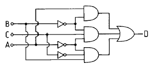
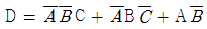
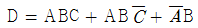
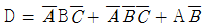
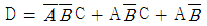
(정답률: 알수없음)

2. 가청주파수 증폭기에서 부궤환 회로를 사용하는 목적을 설명한 것 중 적합하지 않은 것은?
- 왜곡(distortion)을 개선하기 위하여
- 잡음을 감소시키기 위하여
- 이득을 크게 하기 위하여
- 주파수특성을 좋게 하기 위하여
(정답률: 알수없음)
3. 다알링톤(Darlington)회로의 설명으로 틀리는 것은?
- 전압 이득이 작다.
- 전류 이득이 크다.
- 입력저항이 작다.
- 출력저항이 작다.
(정답률: 알수없음)
4. 다음 연산증폭회로에서 출력전압 eo 를 구하는 식은? (단, R1 = R3, R2 = R4 이다.)
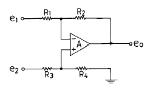
- eo = e2-e1
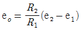
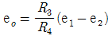
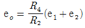
(정답률: 알수없음)
5. 트랜지스터의 콜렉터 누설전류가 주위온도의 변화로 15[㎂]에서 150[㎂]로 증가되었을 때 콜렉터 전류는 9[㎃]에서 9.5[㎃]로 변하였다. 이 트랜지스터의 안정계수 S는 약 얼마인가?
- 0.037
- 3.7
- 27
- 270
(정답률: 알수없음)
6. Flip-Flop 과 관계가 없는 것은?
- RAM
- Decoder
- Counter
- Register
(정답률: 알수없음)
7. 전파정류회로의 최대효율은 약 몇[%]인가?
- 20
- 40
- 81
- 92
(정답률: 알수없음)
8. 반송파전압 ec = Ec cos(wct + θ)를 신호전압 es = Es cos wst 로 진폭변조시 피변조파의 상측파대의 진폭은? (단, ma : 변조도)
- wc + ws
- (ma · Ec) / 2
- wc - ws
- ma · Ec
(정답률: 알수없음)
9. 2진 비교기의 구성요소를 맞게 설명한 것은?
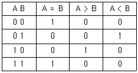
- 인버터 2개, NOR 게이트 2개, NAND 게이트 1개
- 인버터 2개, AND 게이트 1개, NOR 게이트 2개
- 인버터 2개, AND 게이트 2개, X-NOR 게이트 1개
- 인버터 2개, NAND 게이트 2개, X-OR 게이트 1개
(정답률: 알수없음)
10. 트랜지스터를 증폭작용에 이용할 경우의 동작상태는?
- 포화상태
- 활성상태
- 차단상태
- 역활성상태
(정답률: 40%)
11. 동조형 공진결합 증폭기에서 대역폭 B를 넓게 하는 방법은?
- 공진회로의 용량을 증가시킨다.
- 공진회로의 Q를 낮게 한다.
- 공진회로의 저항을 감소시킨다.
- 공진회로의 인덕턴스를 증가시킨다.
(정답률: 알수없음)
12. 다음은 반가산기(Half Adder)의 블록도이다. 출력단자 S(sum) 및 C(carry)에 나타나는 논리식은?
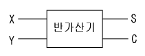
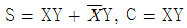
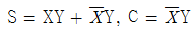
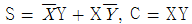
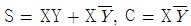
(정답률: 알수없음)
13. 다음 논리식 중 틀린 것은?
- A + 0 = A
- A · 0 = 0
- A · 1 = 1
- A + 1 = 1
(정답률: 알수없음)
14. 하틀레이 발진기에서 궤환요소는?
- 용량
- 저항
- 코일
- 능동소자
(정답률: 알수없음)
15. 다음 회로의 논리 출력식으로 옳은 것은?
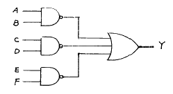
- Y = AB · CD · EF
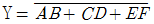
- Y = AB + CD + EF
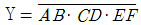
(정답률: 알수없음)
16. 다음 중 Schmitt trigger 회로의 특성으로 옳은 것은?
- 이득을 향상시킬 수 있다.
- 계단파 발진기로 주로 사용한다.
- 삼각파 입력으로 정현파 출력이 된다.
- 회로구성은 쌍안정 멀티바이브레이터와 유사하다.
(정답률: 알수없음)
17. 다음과 같은 회로에 정현파 입력 신호를 가했을 때 출력파형은? (단, 다이오드 순방향 저항 Rf = 0)
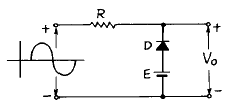
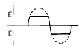
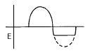
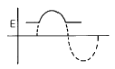
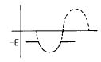
(정답률: 알수없음)
18. 다음 논리식을 간단히 하면?
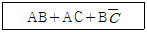
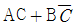
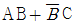
- AC+B
- AB+C
(정답률: 알수없음)
19. 다음 회로중 미분 회로는 어느 것인가?
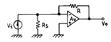
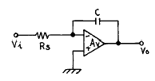
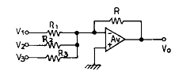
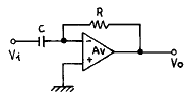
(정답률: 알수없음)
20. 10진수 25를 2진수로 옳게 나타낸 것은?
- 10001
- 11001
- 10101
- 11000
(정답률: 알수없음)
2과목: 정보통신기기
21. 협대역 ISDN의 사용자 망의 설명으로 옳지 않은 것은?
- 기본적으로 2B+D서비스를 제공한다.
- 2개의 64Kbps의 채널이 있다.
- 1개의 16Kbps의 디지털회선을 수용한다.
- 보조적으로 4B+2D서비스가 있다.
(정답률: 알수없음)
22. 다음에서 비디오 텍스의 표준화 방식이 아닌 것은?
- NTSC
- CAPTAIN
- NAPLPS
- CEPT
(정답률: 알수없음)
23. 실제로 전송할 데이터가 없는 단말에도 부채널을 할당하여 발생하는 대역폭의 낭비를 없앨 수 있는 다중화 방식은?
- 주파수 분할 다중화
- 선로 다중화
- 동기 시분할 다중화
- 통계적 다중화
(정답률: 알수없음)
24. 전화 가입자의 회선을 전부 교환기에 집중시켜 놓고 가입자의 접속 희망에 따라 교환 접속하도록 하는 교환기의 기본 기능에 해당하지 않는 것은?
- 호출에 대한 응답 또는 호의 포착
- 발신자의 번호 수신 및 해석
- 선택된 출선의 이중 접속
- 상대방 응답 시의 통화로 접속
(정답률: 알수없음)
25. 다음 중 무선수신기에서 AGC회로의 주된 작용은?
- 주파수선택
- 불요전파 억제
- 잡음감소
- 이득조정
(정답률: 알수없음)
26. 데이타 전송에서 디지틀 신호를 전송회선에 적합한 아날로그 신호로 변환시켜 주는 장치는?
- DTE
- CPU
- MODEM
- CCP
(정답률: 알수없음)
27. 변복조기(MODEM)와 데이터터미널장치(DTE)간의 신호로서 DTE가 데이터를 모뎀쪽으로 보낼 수 있도록 변복조기에게 허가를 원하는 신호는?
- RTS(Request To Send)
- RFS(Ready For Sending)
- CTS(Clear To Send)
- Transmit Timing
(정답률: 알수없음)
28. 다음 중 기간 전화 서비스(POTS)를 위협하는 새로운 기술로 등장한 것으로서 PC와 PC, PC와 전화간의 음성 통화를 지원할 수 있는 기술은?
- WWW
- BSC
- FSK
- 인터넷 폰
(정답률: 알수없음)
29. 데이터 전송회선과 컴퓨터설비간에 전기적 인터페이스를 하고 문자의 조립과 분해를 하는 장치는?
- Modem
- DCE
- CCU
- Codec
(정답률: 알수없음)
30. 다음 중 TV의 주사방식 설명이 옳은 것은?
- 순차주사 : 주사선을 좌에서 우로 주사시키는 방법
- 수직주사 : 주사선을 위에서부터 가로 방향으로 주사시키는 방법
- 비월주사 : 일정간격을 두고 다시 최소 주사선의 중간에 오도록 주사시키는 방법으로 화면의 깜박거림을 감소시켜주기 위한 방법
- 수평주사 : 주사선을 위에서 아래쪽으로 주사시키는 방법
(정답률: 알수없음)
31. 전화기의 구성중 송화기의 특수 현상에 대해 나열한 것 중 틀린 것은?
- 응고 현상 : 탄소립 불량 또는 설계 불량 등에 의해 상호 융착 되는 현상.
- 진동판 떨림 현상 : 영구자석의 불량으로 자유 진동이 발생 되는 현상.
- 호흡 작용 : 탄소립의 발열로 팽창 등에 의해 저항이나 감도가 주기적으로 변화하는 현상
- 탄소 잡음 : 과대한 전류가 가해 지면 탄소 입자가 충돌하여 입자간에 작은 불꽃이 생기는 현상
(정답률: 알수없음)
32. 이동통신 시스템에서 다원접속기술인 CDMA의 장점이 아닌 것은?
- 가입자용량이 기존의 아날로그 셀룰러방식 보다 매우 크다.
- 주파수의 효율적 이용이 가능하다.
- 다중경로에서 링크를 튼튼히 할수있다.
- 넓은 주파수대역이 필요하나 장치가 간단하다.
(정답률: 알수없음)
33. PCM(Pulse Code Modulation) 방식의 장점은?
- 점유 주파수 대역폭이 넓다.
- 기기 구성이 복잡하여 가격이 비싸다.
- 고주파에 있어서 전송손실 및 누화가 생긴다.
- 전송로에서 발생하는 누화, 잡음, 왜곡의 영향이 적다.
(정답률: 알수없음)
34. 게이트웨이로 유입되는 인터넷의 프레임을 목적지로 보내는 장치로서 프레임 경로를 제어할 수 있는 기기는?
- 모뎀
- 허브
- 리피터
- 라우터
(정답률: 알수없음)
35. 텔레텍스트의 기술적 특성이 아닌 것은?
- TV전파를 사용한다.
- 디코더와 TV 수신기와의 조합성이 양호하다.
- 한정된 지역에서 사용된다.
- 선택하여 수신할 수 있고, 반복송출이 가능하다.
(정답률: 알수없음)
36. 지구 전체(극 지방 제외)를 커버하기 위해 필요한 최소의 위성 수는?
- 2 개
- 3 개
- 4 개
- 6 개
(정답률: 알수없음)
37. 다음 중 종이 위에 쓰여진 문자를 반사광을 이용하여 인식하는 입력장치의 이름은?
- OMR
- OCR
- MMR
- MICR
(정답률: 알수없음)
38. 전화기의 송화기는 음성신호를 전기신호로 변환하는 장치이다. 송화와 밀접한 관계가 있는 것은?
- 진동판과 콘덴서
- 진동판과 영구자석
- 진동판과 탄소입자
- 진동판과 유도코일
(정답률: 알수없음)
39. 특정자 상호간만을 연결한 텔레비젼에 의한 통신 시스템으로서 호텔, 병원, 학교 등 특정대상의 관찰을 목적으로 하는 것은?
- CATV
- CCTV
- HDTV
- VRS
(정답률: 알수없음)
40. 데이터 입력장치 중 키보드에 의하지 않고 도표나 그림 등을 직접 컴퓨터에 입력시키는 것은?
- 디지타이져
- 마우스
- 플로터
- 플래즈마
(정답률: 알수없음)
3과목: 정보전송개론
41. 정보를 전송하기 위한 5단계중 4단계는?
- 회선접속
- 링크절단
- 데이타전송
- 회선절단
(정답률: 알수없음)
42. 전송효율을 최대로 하기 위해서 프레임의 길이를 동적으로 변경시킬 수 있는 방식은?
- 정지-대기 ARQ
- Go-back-N ARQ
- Selective-repeat ARQ
- Adaptive ARQ
(정답률: 알수없음)
43. 그림의 베이스 대역(Base band)전송방식은?
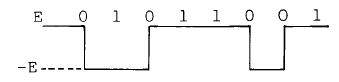
- 바이폴라 RZ방식
- 다이코드 방식
- 차분방식
- CMI방식
(정답률: 알수없음)
44. 일반적인 메시지 블록의 형태중 BCC(Block check character)의 체크 범위가 아닌 것은?
- STX
- TEXT
- ETX
- SOH
(정답률: 알수없음)
45. 헤테로다인 중계 방식이란?
- 수신파를 국부발진기의 고주파 신호와 혼합하여 중간 주파수로 변환한 뒤에 전력을 증폭하는 방식
- 수신파를 국부발진기의 파와 혼합하여 주파수 변환한 뒤에 복조하여 베이스 밴드를 얻어 마이크로파로 변조하는 방식
- 베이스 밴드까지 되돌리는 변복조를 중계마다 반복하여 변조하는 방식
- 증폭기의 비 직진성을 개선하기 위해서 변조하는 방식
(정답률: 알수없음)
46. 신호점의 배치도가 다음 그림과 같이 주어지는 디지틀 변조 방식은?
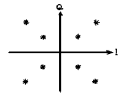
- QAM
- ASK
- FSK
- PSK
(정답률: 알수없음)
47. 반송파로 아날로그 신호를 ON-OFF 하는 방식으로 전송대역을 유효하게 이용할 수 있으며 비동기 전송이 가능한 이점을 가진 변조방식은?
- 주파수 변조방식(FM)
- 진폭변조방식(AM)
- 위상변조방식(PM)
- 진폭위상변조방식(AM-PM)
(정답률: 30%)
48. 반송파 전송에 대해 알맞는 설명은?
- 임의의 주파수 대역을 가진 전송신호를 그대로 전류의 형태로 전송하는 형식이다.
- 신호를 대역통과시키는 전송방식이다.
- 신호를 증폭하는 전송방식이다.
- 송신기에 의해서 발진한 반송파로 신호를 변조시켜 전송로로 보내는 전송방식이다.
(정답률: 알수없음)
49. 통신 시스템간의 대화를 제어하는 기능을 담당하는 계층은?
- 네트워크계층
- 데이터링크계층
- 세션계층
- 응용계층
(정답률: 알수없음)
50. 다음과 같은 조건을 갖는 전송회선의 에러비트수는? (단, 속도=9600bps, 시간=15분, 에러율=5×10-5비트/초)
- 72비트
- 288비트
- 432비트
- 720비트
(정답률: 알수없음)
51. 다음 중 광통신 시스템 특유의 잡음은?
- 양자화 잡음
- 열 잡음
- 모드 분배 잡음
- 오부호 잡음
(정답률: 알수없음)
52. 마이크로파 통신에서 페이딩에 의한 전송품질의 저하를 방지하기 위해 사용하는 것은?
- 다이버시티
- 프리엠파시스
- 디엠파시스
- 스크램블
(정답률: 알수없음)
53. DPCM에 대한 다음 설명중 잘못된 것은?
- 실제 표본값과 추정(예측)표본값과의 차이만을 양자화한다.
- 양자화시 사용하는 비트수가 PCM보다 증가한다.
- PCM보다 정보전송량이 줄어든다.
- TV신호전송 등에 이용된다.
(정답률: 알수없음)
54. 1200 보오(baud)의 전송속도를 갖는 전송선로에서 신호 비트가 트리비트(tribit)이면 전송속도는 몇 bps인가?
- 1200
- 2400
- 3600
- 4800
(정답률: 알수없음)
55. 광통신의 특징을 기술한 것은?
- 광대역이다.
- 전자유도에 약하다.
- 단면적이 크다.
- 증폭기 설치 간격이 좁다.
(정답률: 알수없음)
56. HDLC 순서의 프레임을 구성하는 요소가 아닌 것은?
- 프레그 시퀀스( Flag Sequence)
- 어드레스부(Address part)
- 프레임 체크 시퀀스(Frame Check Sequence)
- 동기 체크부(Synchronization part)
(정답률: 알수없음)
57. 병렬 전송의 특징으로 옳은 것은?
- 전송 속도가 느리다.
- 단말 장치와의 인터페이스 구성이 복잡하다.
- 전송 매체의 비용과 접속 비용이 높다.
- 병렬 신호를 직렬신호로 또는 반대로 변환해야한다.
(정답률: 알수없음)
58. FDM에서 채널간 사용되지 않는 부분은 ?
- 보호 주파수대
- 보호 시간대
- 보호 채널
- 보호 간격대
(정답률: 알수없음)
59. 보기에 최근에 많이 사용되고 있는 xDSL 관련 기술을 열거하였다 이중에 상, 하향 속도가 같은 대칭적인 전송 서비스가 가능한 기술만을 바르게 나타낸 것은?
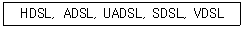
- ADSL, VDSL
- ADSL, HDSL
- SDSL, UADSL
- SDSL, HDSL
(정답률: 알수없음)
60. 다중화 방식의 설명중 옳은 것은?
- TDM은 전송로의 잡음이나 누화 등의 방해가 FDM보다 많다.
- FDM은 TDM에 비해 협대역이고 핵심기술은 필터이다.
- TDM에서 상호변조의 결과 기저대역에서 채널사이에 혼선이 된다.
- FDM의 가장 어려움의 하나는 다중 통신 통신자와 역다중 통신 통신자의 동기를 관리하는것이다.
(정답률: 알수없음)
4과목: 전자계산기일반 및 정보설비기준
61. 정보화사회의 촉진을 위한 전기통신 기본계획의 수립·공고권자는?
- 과학기술부장관
- 한국통신사장
- 한국전산원장
- 정보통신부장관
(정답률: 알수없음)
62. 정보통신부장관은 전기통신역무의 효율적 제공을 위하여 필요한 경우 전기통신사업자간의 업무영역을 조정할 수 있다. 다음 중 전기통신 업무영역의 조정기준으로 틀린 것은?
- 전기통신 역무의 내용
- 전기통신 역무의 수익성
- 전기통신 사업경영의 효율성
- 전기통신 사업의 기술적 관련성
(정답률: 알수없음)
63. 정보통신공사업 관련 법령에서 정한 공사의 종류에 해당하지 않는 것은?
- 통신설비공사
- 전산망공사
- 방송설비공사
- 정보설비공사
(정답률: 알수없음)
64. 정보통신공사업법령에 근거한 감리원의 업무범위에 해당되지 않는 것은?
- 공사계획 및 공정표의 검토
- 공사업자가 작성한 시공 상세도면의 검토 및 확인
- 재해예방대책 및 안전관리의 확인
- 형식승인 준공검사 및 승인 여부 검토
(정답률: 알수없음)
65. 다음의 오퍼랜드 어드레스 방식 중에서 기억장치를 두 번 읽어야 원하는 데이터를 얻을 수 있는 방식?
- 간접 어드레스 지정방식(indirect addressing mode)
- 직접 어드레스 지정방식(direct addressing mode)
- 상대 어드레스 지정방식(relative addressing mode)
- 페이지 어드레스 방식(page addressing mode)
(정답률: 알수없음)
66. 정보화촉진등에 관한 사항을 심의하기 위하여 누구의 소속하에 정보화추진위원회를 두고 있는가?
- 대통령
- 국무총리
- 정보통신부장관
- 과학기술처장관
(정답률: 알수없음)
67. 정보통신망에 관련된 기술기준의 제정목적으로 적합하지 않은 것은?
- 기술 및 기기의 호환성 확보
- 기기의 연동성 확보
- 망의 안정성· 신뢰성 확보
- 전산망에 관련된 신기술개발의 기반 확보
(정답률: 알수없음)
68. 다음 중 Unary 연산이 아닌 것은?
- move
- logical shift
- complement
- NAND
(정답률: 알수없음)
69. 전송설비나 선로설비에 전력유도방지 조치를 하여야 하는 상시 유도위험종전압의 제한치는?
- 650[V]
- 60[V]
- 15[V]
- 10[V]
(정답률: 알수없음)
70. 다음 중 어느 것에서 직접 연산이 수행되는가?
- 누산기
- 레지스터
- 감산기
- 가산기
(정답률: 알수없음)
71. 64비트 마이크로프로세서에서 데이터 버스(data bus)는 몇 개의 선으로 구성되어 있는가?
- 8개
- 16개
- 64개
- 128개
(정답률: 알수없음)
72. 컴퓨터 등 정보처리능력을 가진 장치에 의하여 전자적인 형태로 작성되어 송.수신 또는 저장된 문서형식으로 표준화된 것은?
- 정보 토큰버스
- 사이버 몰
- 전자문서
- 전산자료
(정답률: 알수없음)
73. 2진수 1001의 1의 보수에 해당하는 것은?
- 0001
- 0110
- 0111
- 0101
(정답률: 알수없음)
74. 서브루틴의 호출에 이용되는 자료구조는?
- 배열(array)
- 스택(stack)
- 레코드(record)
- 큐(queue)
(정답률: 알수없음)
75. 디지털 컴퓨터에 대한 설명이 아닌 것은?
- 모든 데이터들을 이산적인 숫자 형태로 표현된다.
- 사칙 연산 및 논리연산을 수행한다.
- 모든 동작은 프로그램에 의하여 수행된다.
- 회로는 미분, 적분, 가산회로 및 릴레이로 구성된다.
(정답률: 알수없음)
76. 마이크로 컴퓨터에서 각 구성 요소간의 데이터 전송에 사용되는 공통의 전송로는?
- BUS
- CHANNEL
- LINE
- INTERFACE
(정답률: 알수없음)
77. 사용자(end user)가 작성한 프로그램을 무엇이라 하는가?
- 원시 프로그램(source program)
- 컴파일러(compiler)
- 언어 번역 프로그램(language translator)
- 목적 프로그램(object program)
(정답률: 알수없음)
78. 다음 중 현재 전기통신관계법령에 속하지 않는 것은?
- 정보처리촉진기본법
- 정보통신공사업법
- 소프트웨어개발촉진법
- 전기통신기본법
(정답률: 알수없음)
79. 전기통신설비의 기술기준에서 정의한 강전류전선이란?
- 직류 700[V]를 초과 7000[V]이하의 전압인 고압선
- 교류 220[V]를 초과 1000[V]이하의 전압인 전선
- 교류 220[V] 이하의 전류가 흐르는 전선
- 300[V] 이상의 전력을 송전하거나 배전하는 전선
(정답률: 알수없음)
80. 다음 중 가장 저급 수준의 프로그램 언어는?
- Assembly어
- FORTRAN
- COBOL
- C
(정답률: 알수없음)